Projet d’Analyse des Données Économiques avec R
I. Introduction
Description du Projet
Notre projet tourne autour de la collecte, du nettoyage, de l’analyse et de la visualisation des données économiques en utilisant R. Nous avons choisi de nous concentrer sur des ensembles de données liés à des entreprises de renom telles qu’Amazon, Microsoft et d’autres, car elles offrent des informations précieuses sur le paysage économique. Nous explorerons divers indicateurs économiques, tendances et modèles pour extraire des insights significatifs pouvant éclairer les processus de prise de décision.
Collecte des Données
Source des données : Yahoo Finance - Les plus actifs
Les données utilisées dans ce projet proviennent de la page “Les plus actifs” de Yahoo Finance. Cette source fournit une liste complète des actions les plus échangées, comprenant des détails tels que la date, les prix d’ouverture, de clôture, les plus hauts et les plus bas, ainsi que le volume de transactions et le nom de l’entreprise associée.
II. Netoyage des donées :
Vérification des valeurs manquantes :
Nous avons commencé par vérifier et supprimer les lignes contenant des valeurs manquantes à l’aide de la fonction
complete.cases. Cela garantit l’intégrité de nos données en éliminant les observations incomplètes.Vérification du format de la date :
Ensuite, nous avons utilisé la bibliothèque lubridate pour confirmer que la colonne ‘Date’ était au bon format de date, et nous avons converti cette colonne en format de date avec
as.Date. Cela assure la cohérence dans la gestion des dates pour nos analyses ultérieures.Vérification des valeurs négatives :
Nous avons également vérifié qu’il n’y avait pas de valeurs négatives dans les colonnes numériques pertinentes telles que ‘Open’, ‘High’, ‘Low’, ‘Close’, ‘Adj.Close’, et ‘Volume’.
Vérification de la cohérence des valeurs ‘High’ et ‘Low’ :
Une étape cruciale a été de garantir la cohérence des données en vérifiant que les valeurs dans la colonne ‘High’ étaient toujours supérieures ou égales aux valeurs correspondantes dans la colonne ‘Low’.
Résumé statistique des données nettoyées :
Après ce nettoyage initial, nous avons généré un résumé statistique pour la colonne ‘Close’, ce qui nous a donné un aperçu des propriétés centrales et de la dispersion de nos données.
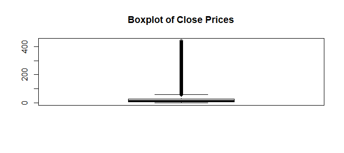
Visualisation des valeurs aberrantes (outliers) :
Pour détecter et traiter les valeurs aberrantes, nous avons créé un diagramme en boîte pour visualiser la distribution des prix de clôture après le nettoyage. Cela nous a permis de mieux comprendre et gérer les valeurs extrêmes qui pourraient affecter nos analyses.
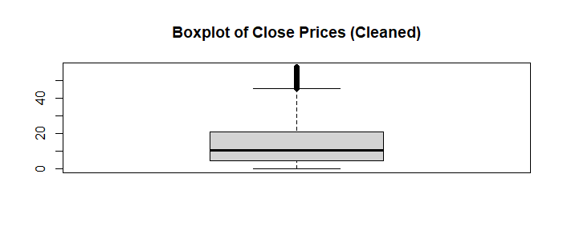
III.Analyse des donnees
Chargement des bibliothèques nécessaires :
Nous avons commencé par charger les bibliothèques essentielles telles que ggplot2, lmtest et dplyr pour effectuer nos analyses et visualisations.
Conversion de la colonne “Date” :
Nous avons converti la colonne “Date” en type de données Date pour faciliter la manipulation temporelle de nos données.
Filtrage des données : Les données ont été filtrées pour inclure uniquement les sociétés sélectionnées et les données des six derniers mois, ce qui nous a permis de nous concentrer sur des données récentes et pertinentes.
Création de graphiques individuels :
Des graphiques ont été créés pour chaque société sélectionnée, montrant l’évolution du prix de clôture et du volume de ventes, offrant ainsi une perspective visuelle sur les performances des entreprises étudiées.

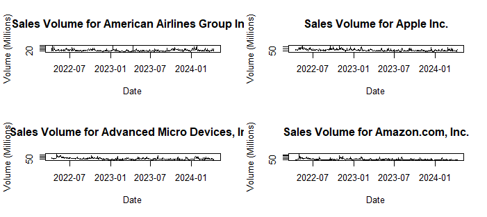
Calcul des moyennes mobiles :
Nous avons calculé les moyennes mobiles pour chaque société et représenté graphiquement les prix de clôture ajustés et les moyennes mobiles pour observer les tendances à long terme.
A.American Airlines Group Inc :
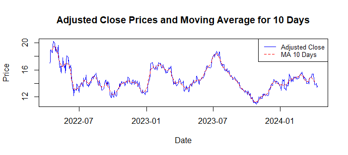
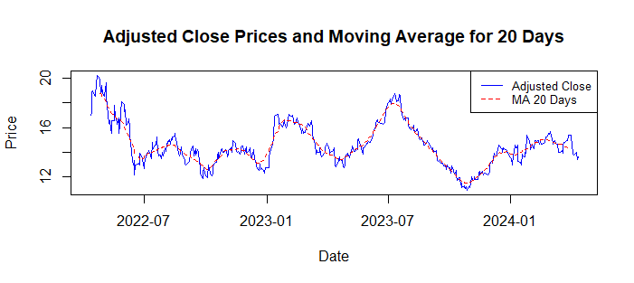

B.Apple Inc :
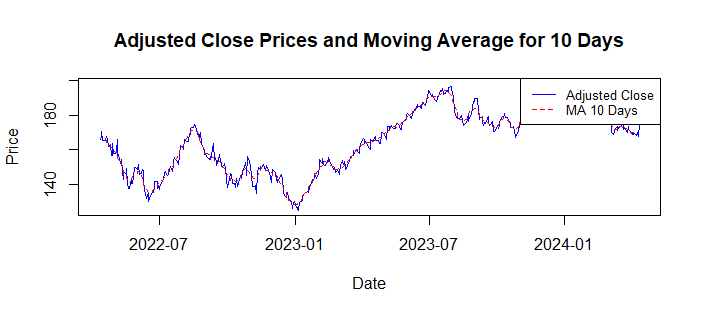
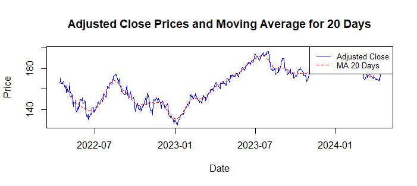
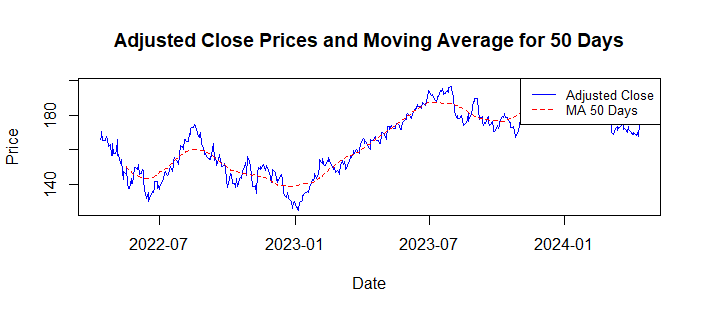
C.Advanced Micro Devices, Inc :
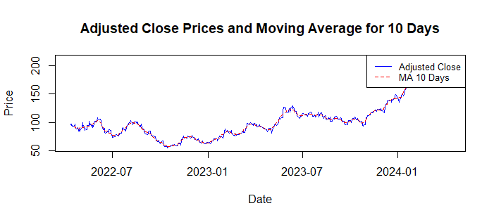
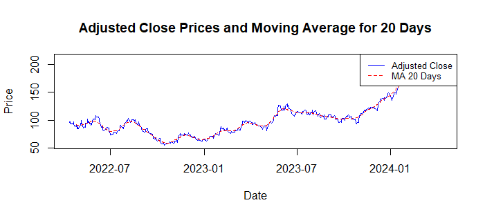
D.Amazon.com, Inc :
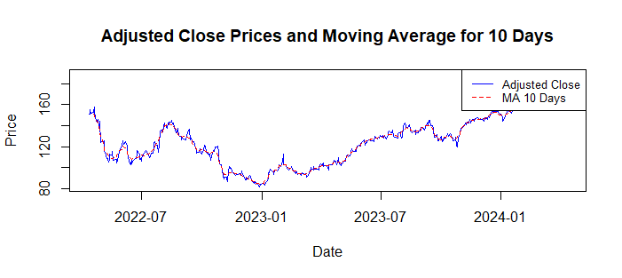
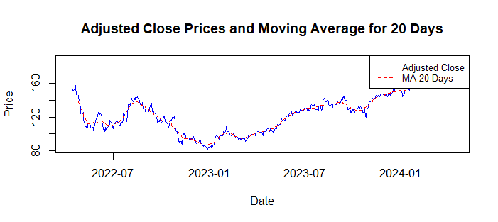
- Calcul de la corrélation : En calculant la corrélation entre les prix d’ouverture et de clôture, ainsi qu’entre les prix les plus élevés et les prix les plus bas, nous avons pu visualiser ces relations à l’aide de graphiques de dispersion, ce qui nous a donné des informations sur les liens entre différentes variables.


corrélation entre les prix les plus élevés et les prix les plus bas :

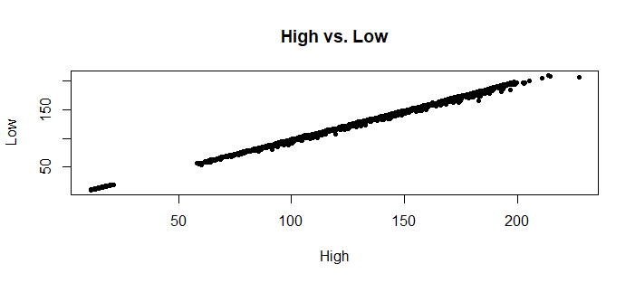
- Groupement et analyse du volume des ventes : Nous avons groupé les données par société pour calculer le volume total des ventes et identifier les dix sociétés ayant le volume le plus élevé au cours des six derniers mois, ce qui est essentiel pour comprendre l’activité économique de ces entreprises.
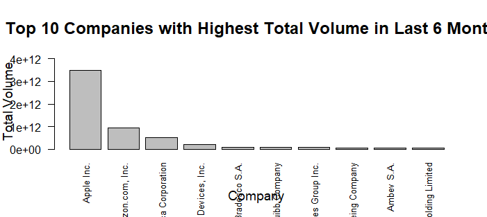
III. Prediction :
Filtrage des données pour AMD :
Les données ont été filtrées pour inclure uniquement les entrées liées à AMD, une étape préalable à la prédiction spécifique pour cette entreprise.
Imputation des valeurs manquantes :
Nous avons remplacé les valeurs manquantes dans la colonne “Close” par la moyenne des valeurs disponibles pour AMD, assurant ainsi la continuité des données nécessaires à la prédiction.
Ingénierie des fonctionnalités :
En créant des variables retardées basées sur les prix de clôture antérieurs, nous avons préparé nos données pour l’entraînement du modèle de prédiction.
Division des données et définition des caractéristiques :
Les données ont été divisées en ensembles d’entraînement et de test, avec la définition des caractéristiques à utiliser pour la prédiction et la variable cible, à savoir les prix de clôture.
Entraînement du modèle et évaluation :
Un modèle de forêt aléatoire a été entraîné en utilisant les données d’entraînement, puis utilisé pour prédire les prix de clôture sur les données de test. Enfin, les métriques de précision telles que MAE, MSE et RMSE ont été calculées pour évaluer la performance du modèle.
Visualisation des prédictions :
Les valeurs réelles et prédites des prix de clôture ont été visualisées sur un graphique pour comparer les prédictions au comportement réel, offrant ainsi une évaluation visuelle de l’efficacité de notre modèle de prédiction.
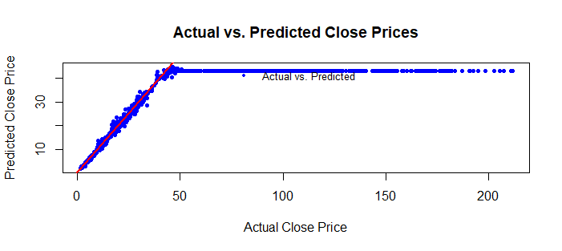